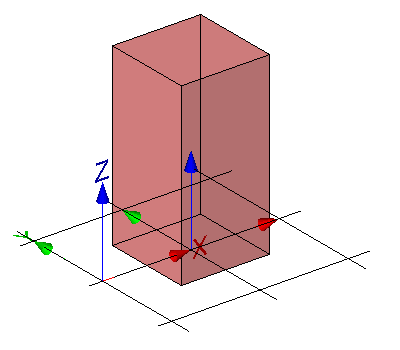

Link to this page
Link to this pageThe mapped representation can be generated by a mapped item placing a mapped representation without a Cartesian transformation.
|
 |
The representation map, being a simple block, is inserted as a mapped item for the building element proxy within its local object coordinate system without any transformation. See Figure E8. |
|
Figure E8 — Mapped representation without transformation |